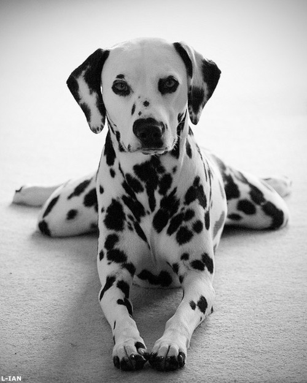

Nálunk kapható kutyafajták:

- Kor: 1-5 hónap
- Fajta: Beagle
- Neme: szuka és hím is kapható

- Kor: 2-5 hónap
- Fajta: Border collie
- Neme: szuka és hím is kapható

- Kor: 1-5 hónap
- Fajta: Dalmata
- Neme: szuka és hím is kapható

- Kor: 3-5 hónap
- Fajta: Goldendoodle
- Neme: szuka és hím is kapható

- Kor: 1-5 hónap
- Fajta: Golden retriever
- Neme: szuka és hím is kapható

- Kor: 4-5 hónap
- Fajta: Jack Russel terrier
- Neme: szuka és hím is kapható

- Kor: 2-5 hónap
- Fajta: Labrador retriever
- Neme: szuka és hím is kapható

- Kor: 1-5 hónap
- Fajta: Maltipoo
- Neme: szuka és hím is kapható

- Kor: 1-3 hónap
- Fajta: Mopsz
- Neme: szuka és hím is kapható

- Kor: 1-5 hónap
- Fajta: Német juhászkutya
- Neme: szuka és hím is kapható

- Kor: 2-4 hónap
- Fajta: Rottweiler
- Neme: szuka és hím is kapható

- Kor: 2-3 hónap
- Fajta: Szibériai husky
- Neme: szuka és hím is kapható

- Kor: 1-5 hónap
- Fajta: Tacskó
- Neme: szuka és hím is kapható

- Kor: 5 hónap
- Fajta: Puli
- Neme: szuka és hím is kapható

- Kor: 3 hónap
- Fajta: Catahoulai leopárdkutya
- Neme: szuka és hím is kapható
| Kor | Ár(Ft) |
|---|---|
| 1 hónapos | 10 000 |
| 2 hónapos | 15 500 |
| 3 hónapos | 25 000 |
| 4 hónapos | 30 450 |
| 5 hónapos | 50 000 |
/\
|